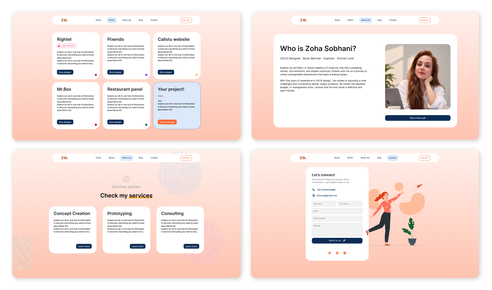
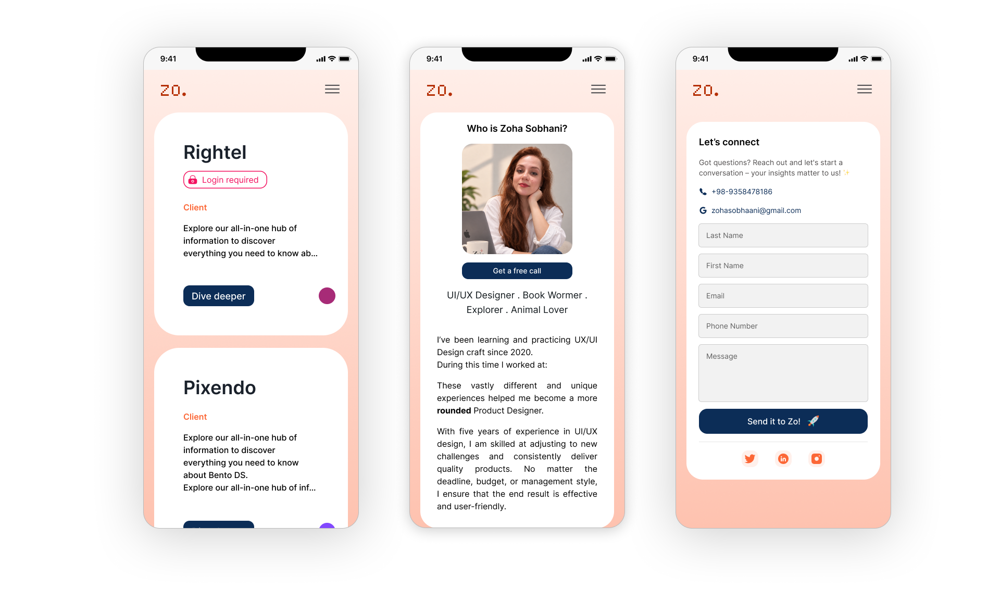
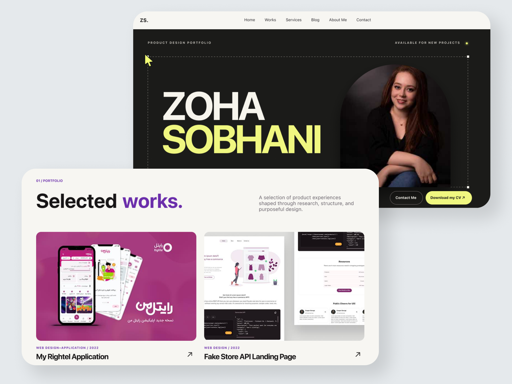

For a long time, my portfolio was the project I was always “almost done” with.
I’d fix the homepage, then realize a project page was too hard to scan. I’d clean up the project page, then notice the mobile layout didn’t hold together. Every improvement exposed another problem.
Looking back, the project went through roughly four stages: a Notion portfolio, a Figma design I tried to build with React, a website I designed and published in Framer, and a new design I took from Figma to GitHub Pages.
Each move came from something I wanted to do better, or something I hadn’t yet learned how to do.
Somewhere to put my work
My first portfolio lived in Notion because I needed a link I could send to people. That was the whole brief.
I collected my projects, wrote down the thinking behind them, added screenshots, and published the pages. No code. No hosting problems. No weeks lost to choosing an animation curve. It did the job.
But the more work I added, the harder it became to read. A hiring manager had to open several pages and piece together what I’d done, why I’d done it, and what changed because of it.
I could find everything because I’d built the structure. A first-time visitor couldn’t.
Notion wasn’t the problem. It’s still a sensible way to publish a first portfolio. I’d simply reached the point where the container was shaping the story more than I wanted it to.
The design was ready before the website was
So I opened Figma and designed the site I actually wanted.
I chose what people would see first, where each project needed context, and when an image could do more work than a paragraph. I could control the pace instead of fitting every case study into the same page template.


Then I had to build it.
I tried to implement the design with React, but I didn’t know it well enough to make steady progress. I kept getting stuck translating the layouts and interactions into working code. A change that was simple in Figma could turn into a problem I didn’t know how to solve.
The design gave me a clear target. Getting there meant learning React alongside everything else the website needed, and I was spending more time trying to make things work than improving the experience.
That’s when I decided to learn Framer.
Getting something out into the world
Framer gave me a way to design the website and publish it from the same tool. I spent time learning how its layouts, responsive settings, and interactions worked, then used them to shape the site directly.
I could adjust a section, see how it behaved at different widths, and keep designing with the working page in front of me. Some ideas from the Figma file carried over. Others changed as I built.
Publishing that version was a milestone. I finally had a live website I’d designed and could share.
Later, I decided to rethink the design and returned to Figma. I wanted to work through the new hierarchy, page layouts, and visual direction before choosing how to build them. The experience of publishing with Framer gave me a better sense of what those decisions would mean on a working site.
Working with GitHub Pages
With the new design taking shape in Figma, I researched ways to turn it into code while keeping control over the website. Development tools had moved on since my earlier React attempt, and I found routes that made a custom build more practical for me. I chose GitHub Pages for publishing, with Codex as a coding tool to help implement my design.
The site uses Jekyll, HTML, CSS, and JavaScript. Its source files live in a GitHub repository. That setup gives me direct access to the page structure, styles, interactions, and content, so I can change the site as my work evolves.
My Figma design was the starting point for those decisions. I’d worked out the hierarchy, typography, spacing, and project layouts there. During implementation, I reviewed each section in the browser against that design and checked where it needed to adapt to real content or a smaller screen.
Some details needed another pass. A heading could wrap differently, a project card could feel too dense, or a transition could interrupt the reading flow. I used those differences to refine both the design and its implementation.
And I learned to look beyond the layout. Shared CSS rules can affect several pages. Responsive breakpoints need to suit the content. A screen recording needs compression before it belongs on a website. These became practical decisions I could understand and review as part of the design process.
Keeping the project in GitHub also meant learning how changes are recorded, how to read a diff, and how an update moves from local files to the published site. More control comes with more upkeep, and I’m still learning parts of that workflow. For this version, that trade-off was worth it.
I now think about how a layout will behave while I’m designing it in Figma. What happens when the text gets longer? Which styles should be shared? What needs to change on mobile? Building the portfolio gave me a way to test those decisions and bring what I learned back into my design work.

This image shows the final homepage and selected-work section, including the updated visual hierarchy, navigation, and case-study entry points.
You can also visit the live portfolio.